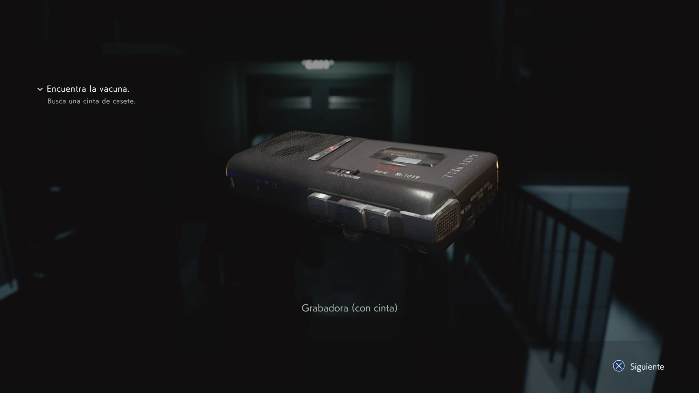

-
Del disco al digital:
La extraña historia de los formatos musicales
-
¿Y cómo hemos llegado aquí?
Independientemente de su popularidad actual, todos los formatos en esta lista han tenido un rol esencial en la marcha hacia el dominio digital.
-
Los formatos físicos existen desde aproximadamente 1870
Pero en este relativamente corto periodo de tiempo, se nos han ocurrido formas bastante curiosas de publicar música.
-

Averigualo tu mismo
Dirigite a la seccion de Historia